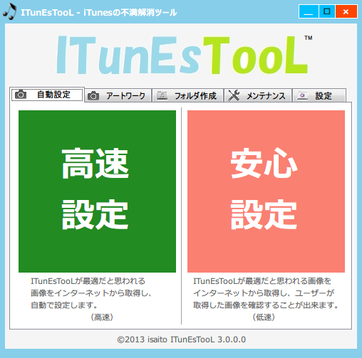
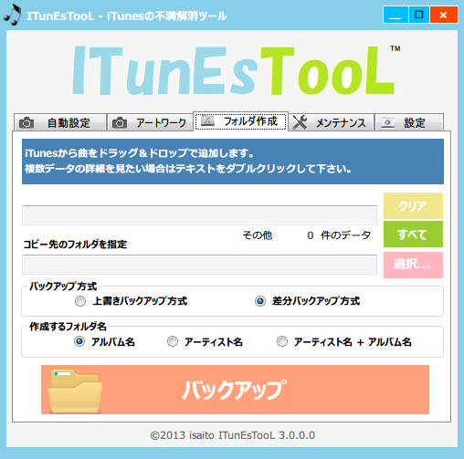

ITunEsTooL(アイチューンズツール)ならクリック一つでアルバムに
最適なアートワークをすべての曲に自動で取得し設定することが出来ます。
快適なiTunesライフをお楽しみ下さい。
Windows10対応！
簡単な操作方法はこちらご覧下さい。
ココがスゴい！①
手軽に美しく！
画像探して〜保存して〜iTunes開いて〜設定ってやってたのが 「高速設定」、「安心設定」をクリックするだけで穴だらけのiTunesが 勝手にキレイになります、忙しい人でも美しいiTunesを維持することが出来ます。
こだわる人にも！
自動設定では、アルバムに最適な画像を検索していますが、場合によっては個人特有の画像を設定したい場合があります。 ITunEsTooLではクリップボードの画像や、画像ファイルを簡単に設定することが出来るので安心してご利用頂けます。
画像がない曲がわからない！
問題ありません！ 画像が設定されていない曲はITunEsTooLが検索してくれます。 画像が設定されていない曲を検索し、一枚一枚画像を設定することが 可能なので、神経質な方でもご利用頂くことが出来ます。
ココがスゴい！②

独自のプレイリストを作成！
画像やアルバム名やアーティスト名が設定されていない曲のプレイリストが作成出来ます。 また、文字で検索することが出来ますので、好きなアーティストなど独自の プレイリストも簡単に作成出来ます。正規表現が使えるので何でも検索出来ます。
リンク切れの曲など簡単メンテナンス！
リンクが切れている曲をワンクリックで一括削除出来ます。 また、重複している曲もワンクリックで一括検索出来るのでメンテナンスには最適です。 ※重複している曲の一覧はプレイリストに作成されます。
アートワークのバックアップが出来る！
画像も曲の一部であり、大切の保存したいものの一つであります。 iTunes上のアルバムからすべての画像をバックアップ出来るので 安心してiTunesを利用して頂くことが出来ます。
ここがスゴい！③
手軽に音楽を整理！
iTunesからデスクトップ等にドラッグすると一曲ずつコピーされるので フォルダにまとめるのが大変ですが、 アルバム名、アーティスト名のフォルダにまとめて保存することが出来ますので綺麗に簡単にバックアップを取ることが出来ます。
高速でバックアップ！
すべての曲を保存すると時間がかかってしまうのですが、上書きバックアップ、差分バックアップと選ぶことが出来るので、用途に合わせてご利用頂くことが出来ます。
曲の場所がわからなくても問題なし！
ITunEsTooLが曲の場所を探してくれます。そのため、iTunes上の登録されている曲をモレなくバックアップすることが出来ます。
システム条件
推奨条件
Intel Core i3®以降のプロセッサ
2GB以上のメモリ
1366 x 768 ピクセル以上の解像度
Windows Vista / Windows7 / Windows8 / Windows 8.1
※Windows XPも動きます。
アプリケーションの起動には Microsoft(R).NetFrameWork 4 が必要です。
.NetFrameWork4が未導入の場合はの
.NET配布サイト
よりランタイムをダウンロードしてください。
掲載情報
以下の雑誌、サイトの管理人の方々がITunEsTooLを取り上げてくれました！
管理人のなかにはWindows8、8.1対応の協力、ITunEsTooLの仕様について意見をくれた方々もいます。感謝っ！
使用方法が丁寧に書かれていますのでマニュアル代わりとなればと思います。
※画像をクリックするとリンク先に飛びます。